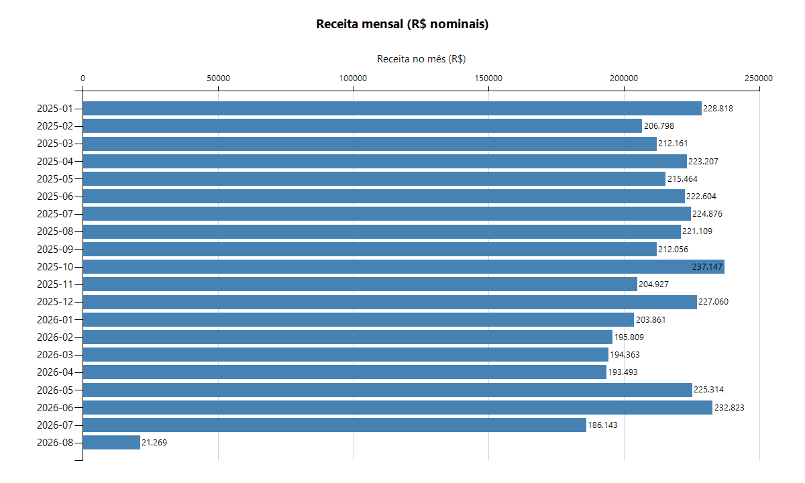

Relatório Estatístico · Pizzaria do Vitto
Estudo analítico de 48.620 itens e 21.350 pedidos para orientar decisões de cardápio, horários e precificação.
Ver detalhes do projeto
Mineração de dados, modelagem estatística descritiva, decomposição de receita e elaboração do relatório técnico e executivo.
Diagnóstico estruturado de 19 meses de vendas da pizzaria. A análise revelou demanda semanal plana (variação de 5,7%), concentração de 62,5% da receita em 4 horas do dia, a dominância do tamanho G (45,9% da receita com degrau constante de R$ 21,25) e estabilidade de preços, gerando 5 recomendações acionáveis de negócio.
- Relatório executivo e acadêmico em documento web (HTML) e A4 print-ready
- Relatório formal em PDF oficial para download
- Matriz de 5 recomendações priorizadas por esforço, risco e impacto financeiro
Aplicação prática de métodos estatísticos a decisões empresariais, identificação de falhas de cobertura de dados (222 dias ausentes) e comunicação executiva baseada em dados reais.
PowerShell, Python/R, Estatística Descritiva, HTML5, CSS semântico